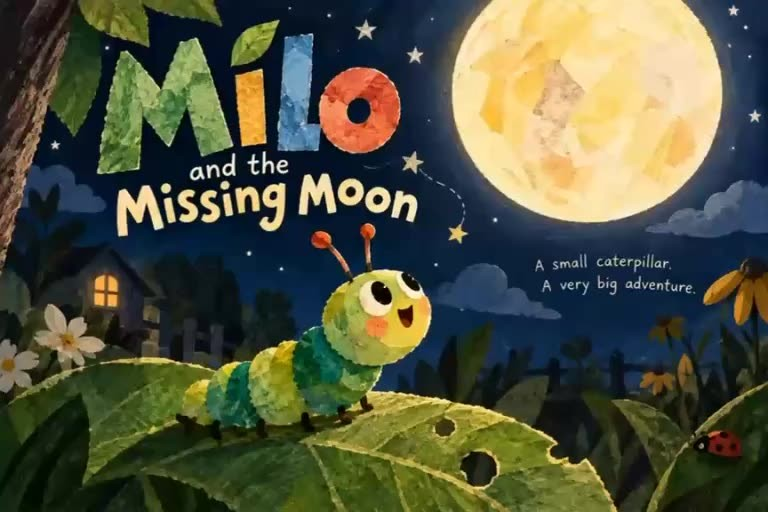
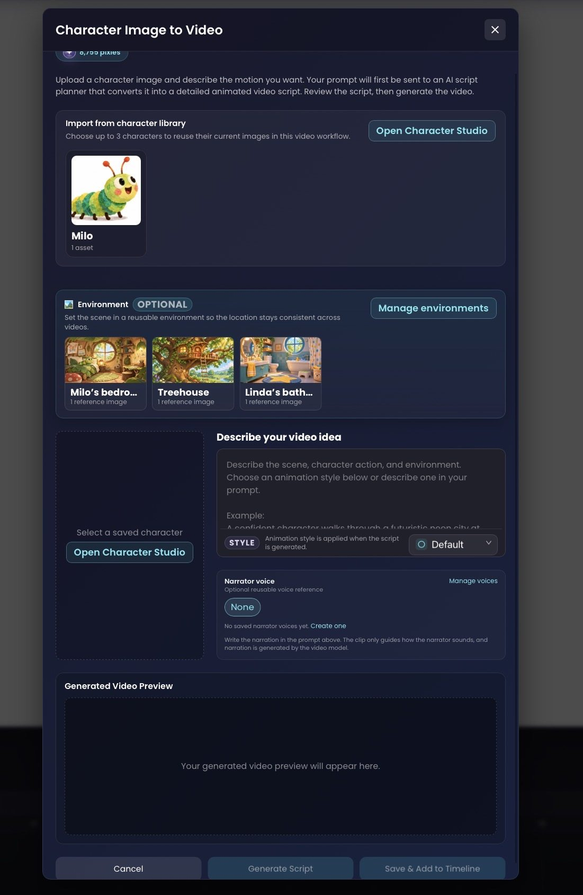
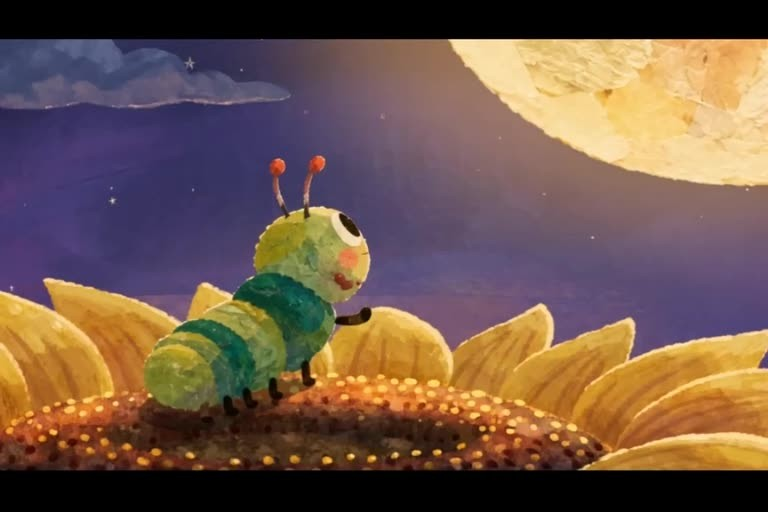
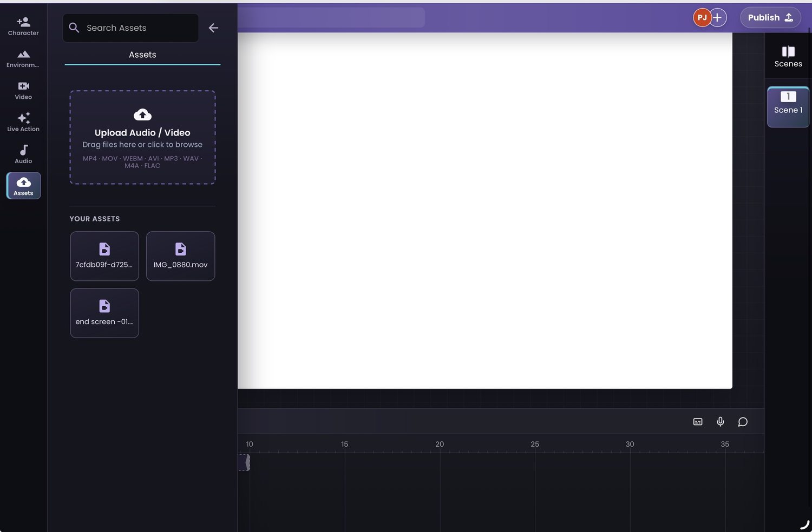

How to Create Consistent AI Characters Across Animated Scenes
One recognisable character. Different locations, expressions and camera angles. Here's how to build a repeatable animation workflow using Pixle.

It's easy to generate a cute AI character once. It's harder to make that character look recognisable when you move from a bedroom to a forest, switch camera angles, add dialogue or start your next episode.
For creators producing animated YouTube channels, educational content or recurring children's stories, character continuity is part of what makes a series feel like a series. This guide shows a practical way to approach it with Pixle, using the caterpillar Milo as an example.
Why characters drift between AI generations
Generative systems can interpret the same description in slightly different ways each time. Proportions, eye shapes, textures, colours and accessories may change even when the prompt sounds identical.
Instead of asking the model to reinvent your character for every shot, work from an established visual identity and reuse it throughout production. References reduce ambiguity; reviewing each generated result is still important.
1. Save your character in Character Studio
Begin by defining a recognisable character identity. For Milo, that means his green segmented body, large expressive eyes, orange-tipped antennae and soft illustrative style.
In Pixle's Character Studio, creators can establish a persistent character identity and add visual assets and a voice reference over time. The screenshot below shows Milo in the saved-character library.

Creator tip: Build a mini character bible: a front-facing reference, a side view, characteristic expressions, consistent colours and notes about clothing or accessories. Use these to review each output.
2. Build reusable story environments
A recurring character also needs a recognisable world. Pixle's Environment Studio lets creators save locations with reference images rather than describing each background again from scratch.
In the screenshot, the saved locations include Milo's bedroom, a treehouse and a bathroom. These assets can provide a consistent reference when the story returns to familiar places.

3. Combine your character, environment and scene instructions
Next, open the Character Image to Video workflow. In the interface shown below, you can select a character from the library, choose an optional saved environment and describe the action you want to animate.
The workflow also exposes animation-style and narrator-voice settings. The visible interface explains that your idea is first turned into a more detailed animation script before the video is generated.

For a three-scene sequence, you might write:
- Opening: Milo looks up at the moon from a leaf in a nighttime garden.
- Adventure: Milo crawls through oversized strawberry plants, looking around curiously.
- Discovery: Milo pauses on a sunflower and smiles in the warm moonlight.
Keep the essential visual description of Milo stable, while changing the action, emotion and camera framing from scene to scene.
4. Watch Milo across multiple scenes
Here's the full animated short Milo and the Missing Moon, provided as a creative example. It shows Milo moving through multiple settings and close-ups, and later transforming into a butterfly. The same recognisable character is the thread connecting the story.



These frames illustrate continuity within one finished animation. They do not, by themselves, demonstrate the results of separately generated episodes.
5. Review shots and assemble the story
Before you assemble the final sequence, compare clips against your original character reference. Pay particular attention to eyes, antennae, body proportions, colouring, expression and the transition between camera angles.
Pixle also provides a timeline workspace for arranging the scene sequence. The screenshot below shows the editor before any finished video is displayed on the canvas.

If you have supporting audio or video files, Pixle also includes an assets panel where they can be uploaded and organised.

6. Use a simple continuity checklist
Even with saved references, generative video can introduce unwanted changes. Before publishing, check every scene against the character and environment references:
- Character: face, proportions, colours, costume and distinctive features
- World: location details, perspective, lighting and atmosphere
- Style: texture, outlines, motion and overall visual treatment
- Audio: consistent voice, dialogue clarity and sound design
- Editing: whether adjacent shots feel like parts of the same story
If a shot breaks continuity, review the prompt and references and revise it before publishing. Treat AI-assisted production as a workflow that combines generation with deliberate creative direction, not as a guarantee of flawless consistency.
Give your characters a world they can return to.
Build reusable characters and environments, develop scenes and bring your animation together in Pixle.
Start creating with PixleAbout the author: The Pixle Team builds an AI-assisted animation workspace for creators producing characters, story environments and animated videos. This guide uses screenshots of the product interface and an example story supplied for the tutorial.